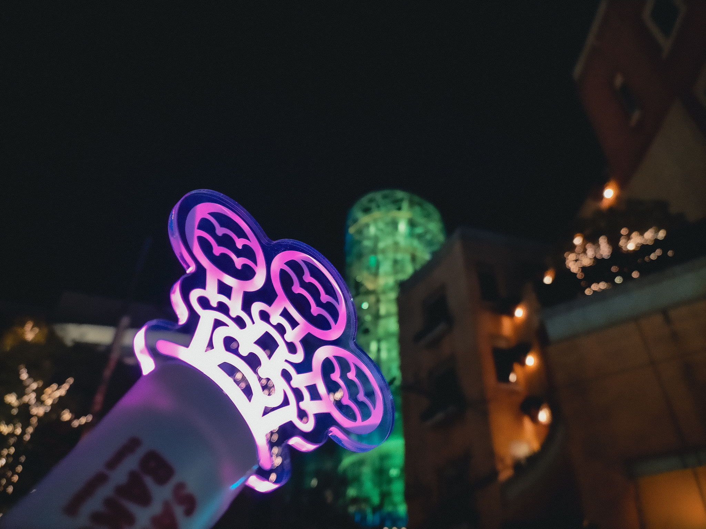

初参加, ばくたん。2025 感想
(更新)

総じて、本当に参加して良かったと思えるイベントでした。
前提
今回のばくたん。は高校生の私にとって初めて参加する「ばくたん。」でした。ばくたん。の雰囲気を初めに味わうのは現地にしたいと、これまでのばくたん。のアーカイブは観ていませんでした。
実際に現地に足を運ぶとなると、都市か否かでいうと田舎に住んでいる私にとっては3時間ほど新幹線に揺られることになります。そういうわけで、ばくたん。参加前の（未だ名取に対する想いは薄い方であった）私は非常に楽観的かつ軽い気持ちでばくたん。のついでに他の場所も巡りたいと迂闊にも企画してしまい、ばくたん。の前に国立国会図書館を訪れる計画を立ててしまっていました。資料の読み込みに予想以上に時間をかけてしまい、結果的に予定より4時間以上長く滞在、ラ チッタデッラに到着した時にはすでに外は暗く、コラボメニューがあるカフェやレストランは私が確認できた限りの店については整理券がなければ入店不可という状況になっていました。
着いたのは18:00過ぎであったため、まだ始まるまでには時間がありました。さなコレ Vol.3, 4 が完売していたのは残念ではありましたが、とにかく今年の さなコレ は、そして特にカレンダーだけは購入したいと、物販の方へ向かいました。そこでまず驚いたのはせんせえ達の層が様々であること、皆お洒落であることでした。基本的に20代半ば、男女比としては 6:4 くらいに見え、特にオタク然とした姿ではなく、むしろファッション誌に載りそうなほどに綺麗でスタイリッシュな着こなしです。さすがせんせえ方、見た限りでは皆キャッシュレスであり、列は非常にスムーズに動いてゆきました。あっという間に列の一番前に移動でき、私に順番が回ってきました。今回、私は 1,2,5番、すなわち さなコレ Vol.5 、アクリルフィギュア、カレンダー を購入しました。
ついにグッズを購入できた嬉しさでほくほく状態のまま、チネチッタへ向かいます。建物の前に到着すると、18:20ごろになっていました。前には長い列ができているように見えましたが、最後尾のせんせえの方に確認してみるとそれは 白熊堂 の うさちゃんせんせえクッキー缶 の購入待機列であるということでした。礼を言い、列をたどって前方へ行き確認してみると、確かにその列は白熊堂のなかへ続いていました。親切なせんせえと助け合いの文化に感謝します。列のシステムとして、最後尾の方が「最後尾」「さなのばくたん。」などと書かれたプラカードを持つという形式になっていました（ただ、そのプラカードには特に「クッキー缶」や「白熊堂」とは書かれていなかったため、その点は少しわかりづらいかなと思いました）。
チネチッタの塔の真下へ向かってみると、エスカレータがあり、それを上ると列があり、それに並んで入場すると上の階にはフラスタが見えていました。フラスタがある階へ向かってみると、ほかに映画のパロディポスターなどが存在しており、せんせえ方は皆順番に並んで撮っていました。それぞれが満足に撮影できるようにという配慮が溢れていて、フラスタおよびポスターの前ではフラスタ群に沿って横向きに列が自然と形成され、順番に動いていくという形になっており、特に混乱した様子はなく、ファン層の良さを感じました。
スクリーンへ入場し、自らの席を探し当てて座りスクリーンを観ると、RPG風に様々に注意を呼びかける名取の映像が流れていました。特にデビル名取の部分がとてもかわいい印象を受けました。撮影ポイントでスクリーンを撮影し、 Bluesky に投稿すると開演まで残すところ約15分といったところでした。ペンライトを用意し、鞄から名取さながいっぱいコレクションフィギュア（ふわふわ状態）を取り出し指につけ、あとは開演を待つのみという状態としました。
開演
以下、ネタバレを含みます。
ばくたん。が始まります。名取がスクリーンの向こうに登場し、こちらに語りかけます。こちらが反応を返すと、名取もそれに応じて話してくれます。いつもの配信と同じような構造をとりながらも、それとは全く異なる、すごくリアルなコミュニケーションが実現する空間がそこにありました。いつもならカタカタとキーボードを打ってテキストで気持ちを表現するわけですが、ここでは直接声に出して、それが直接届く。また、周りは全員せんせえであるため、安心して大声で名取にコールを送ることができます。素晴らしいことです。
最初の場面では名取に対して "Happy birth day to you" を皆で歌いました。これは初めての参加であり声出しに慣れていない私にとっては非常にありがたかったです。'dear' の後にどう続けるかは判断が分かれるところかと思いましたが、私がいたスクリーンでは皆「名取」でした。
開幕から少し、名取は脈絡なくトラックと衝突します。ぶつかる瞬間にエフェクト等で衝突部分は隠されなかったため、観ていて正直辛かったです。場面転換の時まではスクリーンから目を逸らしていました。しばらくして、新衣装に身を包んだ名取が登場します。素晴らしい服飾デザインで、シンプルでありつつ美麗。さえきやひろちゃんいつもありがとう！となりました。その後のエッビーナースデイでは初めて歌に対してコールをしました。
かくかくしかじかで牢屋に閉じ込められた名取は、デビル名取と邂逅。デビル名取の能力はかなり面白く、かなりワクワクしました。その後の裁判のシーンでは Z-aN を用いてのアンケートが行われ、その場で結果が反映されるなど、楽しい仕組みでした。
メチャ・ハッピー・ショーが終わってからはタイトルが黒背景に映し出されましたが、徐々にアンコールが沸き始め、全体に広がってゆきました。私がいたスクリーンでは、1stLiveのときと同様、合いの手を入れてくれたせんせえもいて、アンコールの終了時にはそのせんせえに対するありがとうコールも起こっていてとても良かったです。
そして告知もあり、特に 2ndLive の開催の発表は非常に嬉しかったです（ 2ndLive 開催の発表については未だ エビや名取の Twitter, 公式サイトでは発表がありませんが、ばくたん。振り返り配信では言及があったので書きました）。また、開催される会場がとても素晴らしく、VTRで会場名が映った際には思わず「え、すご」と声が出ていました。
そして最後には「いっかい書いてさようなら」。これは本当に好きな曲だったので、思わず口ずさんでしまいました。来年こそはこの曲が収録されている さなコレ Vol.4 を逃さずに買いたいと思っています。振り返ると本当にあっという間の2時間で、いまきたばっかり～！、となりました。
総括
まず、今回実際にばくたん。に足を運んでみて最も良かったことは、コールができたこと、です。歌に対するものだけでなく、展開や名取が話したことに対しても声を出して反応することができる環境にあり、配信ではキーボードを介して文字のみで返していたものを、実際に声を出して返すことができるというのはとても独特で良い経験でした。敷衍して、デバイスを介さずに、その場で起こる感情をそのまま声に出してコールすることができる、という点が嬉しく、テキストで表現していた時よりも遥かに自らの感情を良くも悪くも包み隠さず声に出して伝えられたように思います。最初は大きな声でコールすることに少し躊躇いがありましたが、周りは全員せんせえであるから安心して声を出して良いのだと思い、徐々に大きな声を出してコールすることができるようになっていきました。皆で一体になって様々にコールすることができるのはとても楽しかったです。また、歌ではなく展開の途中で時々起こる単独のコールも面白く、私も3箇所くらい言ってみたりしました。単独の「ありがとう」から全体に広がったり、的確なツッコミに笑いが起きたりもしていて、そういった、突発的に予測不可能なタイミングで起こる現象があるのもイベントの良さだと思いました。
最初は曲に合わせてペンライトを振るのに苦戦しました。全体に合わせようとして周りを見ながら振っていると、スクリーンが観られない。かと言ってスクリーンを観ながら振ると全体からずれてくる。そういうわけで、初めはスクリーンと客席の双方に目を配りながら振るタイミングをつかむのに必死になってしまっていました。でも結局、せっかくのイベントなのだから楽しむのが一番だと思い、中盤からはずっとスクリーンを観つつ、曲に合わせて感覚で振るようにしてみました。すると意外と全体のタイミングにも合わせられていることに気づき、それからは振るタイミングを気にかけることなく、思いのままにペンライトを振ることができました。この点についても、実際にばくたん。に足を運んでみて良かったことであり、今回の学びとして重要なものでした。
ペンライトの色が14色あるのも嬉しかったです。名取を表す色として代表的な PINK はもちろん、少しエモい雰囲気かつ鮮やかな PASSION PINK 、デビル名取を表す VIOLET, PURPLE 、いろりの YELLOW, ORANGE 、悲しみ・お水の BLUE 、草を表す GREEN, EMERALD GREEN などの色があり、様々なことをそれぞれに適した色で表現することができます。ペンライトはその名の通り光るものです。これは暗い場内ではとても良いもので、皆がペンライトのスイッチを点けるとそれぞれの存在が明示され、手の動かし方や色の表現によるそれぞれの感情が周りに伝わりやすくなります。また、ペンライトを掲げるそれぞれ自身についても、自身の感情を周りのせんせえ達やスクリーンに映っている名取に対して伝えることができます。この場面でどの色にして、どのように振るか、あるいはあえて消すか。それぞれの選択がそれぞれの発する光によって瞬時に示されるため、全体として面白い一体感、時には良い意味での分裂が生まれたりします（今回では特に裁判のシーンでの有罪か無罪かといった場面や、名取に対して場内全体で全力でペンライトを振る場面などで色や振り方が大きく分かれたりしていて、観ていて興味深かったです）。
チネチッタに入場した際には、フラスタや映画のパロディポスターを撮るせんせえ達の多さに驚きました。普段ただ「3,502 watching now」などと文字として表示されている数を見慣れていますが、改めてその数を目にすると圧倒されます。それぞれの互いに対する良い気遣いを幾つも目にしましたし、本当にファン層が良いと思います。退場の際も特に混乱はみられず、静かにエスカレータで移動して去っていく。そういった姿がとてもかっこよかった。綺麗でした。私もそのうちの一人としてマナーを守ろうと心がけ移動し、チネチッタの塔を名残惜しく見やりつつ去りました。
今回ばくたん。に参加してみて、リアルイベントの魅力、楽しさ、良さを知ることができました。名取といつもの配信よりかは形式的に少しだけ近い距離で、劇場内のせんせえの一人としてコミュニケーションをとることができましたし、ペンライトを何色にするか考え光らせ振ったり、大きな声を出してコールしたりすることもできました。また、普段の配信で見るコメント達のテキストの向こうにあるせんせえ方のリアルの姿を確認することができ、本当に存在しているのだという実感を持てましたし、マナーの良さを各所で目にして安心感を覚えました。総じて、本当に参加して良かったと思えるイベントでした。最後になりますが、今回のばくたん。もとい「さなのばくたん。 -をやろうと思ったら異世界に転生していた件について-」に関わった全ての方々に感謝を申し上げます。本当に最高なイベントをありがとうございました！